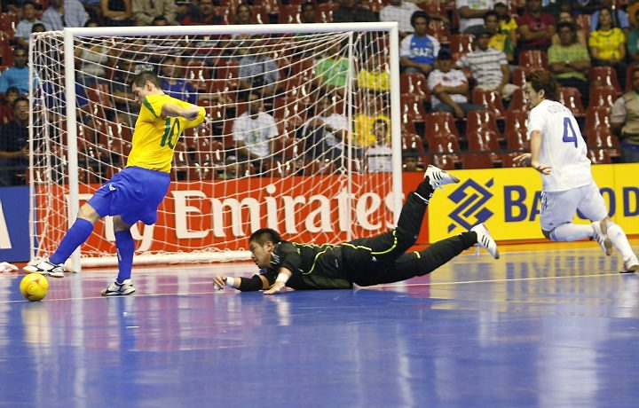
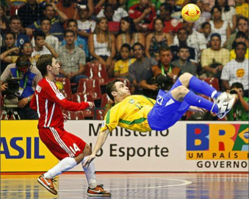
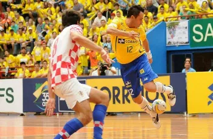

hello world!
Bem-vindo ao Mundo do Futsal – Onde a Bola Não Para e a Emoção é 5x Maior! Se você respira futebol, mas curte a adrenalina de um jogo rápido, intenso e cheio de habilidade, então o futsal é a sua praia (ou melhor, sua quadra). Aqui, o tempo voa, a bola rola o tempo todo, e cada toque pode ser um golaço de placa. 5 contra 5, mil possibilidades Com menos espaço, mais velocidade e jogadas que parecem coreografadas, o futsal exige pensamento rápido, dribles afiados e entrosamento de tirar o fôlego. É futebol com turbo ligado. Não tem tempo ruim: o jogo é quente, faça sol ou faça chuva Como o futsal é jogado em quadra coberta, o espetáculo está garantido o ano todo. Sem lama, sem desculpas, só talento e suor dentro das quatro linhas. É tipo videogame, mas na vida real Sabe aquele golaço no videogame que parece impossível na vida real? No futsal, ele acontece. Giro pra cá, caneta pra lá, chapéu no goleiro… e gol! Escola de craques Quer saber de onde saíram monstros como Falcão, Neymar e Ronaldinho? Todos lapidaram seu talento no futsal antes de brilhar nos gramados. Aqui é onde a mágica começa. Jogue, torça, viva o futsal Seja você jogador, torcedor, treinador ou apenas curioso, o futsal tem um espaço pra você. Venha fazer parte dessa comunidade vibrante onde a paixão pela bola é 100% acelerada.
O futebol de salão tem duas versões sobre o seu surgimento, e, tal como em outras modalidades desportivas, há divergências quanto a sua invenção. Há uma versão que o futebol de salão começou a ser jogado por volta de 1940 por frequentadores da Associação Cristã de Moços, em São Paulo (SP), pois havia uma grande dificuldade em encontrar campos de futebol livres para poderem jogar e então começaram a jogar suas “peladas” nas quadras de basquete e hóquei. No início, jogavam-se com cinco, seis ou sete jogadores em cada equipe, mas logo definiram o número de cinco jogadores para cada equipe. As bolas usadas eram de serragem, crina vegetal, ou de cortiça granulada, mas apresentavam o problema de saltarem muito e frequentemente saiam da quadra de jogo, então tiveram seu tamanho diminuído e seu peso aumentado, por este fato o futebol de salão foi chamado de “Esporte da bola pesada“. Há também a versão, tida como a mais provável, de que o futebol de salão foi inventado em 1934 na Associação Cristã de Moços de Montevidéu, Uruguai, pelo professor Juan Carlos Ceriani, que chamou este novo esporte de “Indoor-foot-ball”. Primeiras entidades oficiais HabibMaphuz é um dos nomes que mais se destaca nos primórdios do futebol de salão. Maphuz era professor da ACM de São Paulo e no início dos anos cinquenta participou da elaboração das normas para a prática de várias modalidades esportivas, sendo uma delas o futebol jogado em quadras, tudo isto no âmbito interno da ACM paulista, este mesmo salonista fundou a primeira liga de futebol de salão, a Liga de Futebol de Salão da Associação Cristã de Moços. Mais tarde o professor se tornou o primeiro presidente da Federação Paulista de Futebol de Salão. Em 28 de Julho de 1954 foi fundada a Federação Metropolitana de Futebol de Salão, atual Federação de Futebol de Salão do Estado do Rio de Janeiro, a primeira federação estadual do Brasil, sendo Ammy de Moraes seu primeiro presidente. Neste mesmo ano foi fundada a Federação Mineira de Futebol de Salão. Em 1955 foi fundada a Federação Paulista de Futebol de Salão. O que se viu a partir de então foi o desencadeamento da origem de federações estaduais por todo o Brasil. Em 1956 as Federações cearense, paranaense, gaúcha e baiana. Em 1957 a catarinense e a norte-rio-grandense, em 1959a sergipana. Na década de 60 foram fundadas as Federações de Pernambuco, do Distrito Federal, da Paraíba, enquanto na década de 70 tiveram origem as federações acreana, a do Mato Grosso do Sul, a goiana, a piauiense, a mato-grossense, e a maranhense. Nos anos 80 foram fundadas as federações amazonense, a de Rondônia, a do Pará, a Alagoana, a do Espírito Santo e a Amapaense. E, finalmente, na década de 90 vieram as mais novas: Roraimense e a Tocantinense. Primeiras regras As primeiras regras publicadas foram editadas em 1956. As normas foram feitas por Luiz Gonzaga de Oliveira Fernandes, em São Paulo. Juan Carlos Ceriani e HabibMaphuz professores da ACM são considerados os pais do futebol de salão. Este esporte, relativamente novo, é sem nenhuma contestação a segunda modalidade esportiva mais popular no Brasil, somente atrás do futebol, e atualmente o esporte em maior crescimento em todo mundo. O futebol de salão brasileiro tinha no seu inicio, em meados dos anos cinquenta, várias regras. Foi então que em 5 de fevereiro de 1957 o então presidente da Confederação Brasileira de Desportos, CBD, Sylvio Pacheco criou o Conselho Técnico de Assessores de Futebol de Salão para conciliar divergências e dirigir os destinos do futebol de salão no Brasil. Foram eleitos para este conselho com mandato de três anos: Ammy de Moraes (Guanabara), Luiz Gonzaga de Oliveira Fernandez (São Paulo), Roberto José Horta Mourão (Minas Gerais), Roberval Pereira da Silva (Estado do Rio), UtulanteVitola (Paraná). Futsal no Brasil Neste mesmo ano de 1957, em Minas Gerais, houve uma tentativa de fundar-se a Confederação Brasileira de Futebol de Salão, a ata foi encaminhada ao Conselho Nacional de Desportos, mas o CND não acatou tal ata que foi registrada dia 30 de setembro de 1957 com o nº 2.551. Esta situação como conselho subordinado a CBD perdurou até 1979. Em 15 de junho de 1979 foi realizada a Assembleia Geral que fundou a Confederação Brasileira de Futebol de Salão, tendo sido eleito, para o período 1980/1983, como presidente, Aécio de Borba Vasconcelos. Desenvolvimento do futsal pelo mundo Em 14 de setembro de 1969, em Assunção, Paraguai, com a presença de João Havelange presidente da CBD, Luiz Maria Zubizarreta, presidente da Federação Paraguaia de Futebol, e Carlos Bustamante Arzúa, presidente Associação Uruguaia de Futebol, foi fundada a Confederação Sul-Americana de Futebol de Salão – CSAFS, também representou o Brasil nesta reunião Luiz Gonzaga de Oliveira Fernandes. Em 25 de Julho de 1971, em São Paulo numa iniciativa da CBD e da CSAFS, com a presença de representantes do Brasil, Argentina, Bolívia, Paraguai, Peru, Portugal e Uruguai foi fundada a Federação Internacional de Futebol de Salão – Fifusa, o seu primeiro presidente do conselho executivo foi João Havelange, que comandou de 1971 a 1975, mas devido seus compromissos com o futebol, tanto da CBD, como na Fifa, quem realmente dirigiu a Fifusa neste período foi seu secretário geral Luiz Gonzaga de Oliveira Fernandes. Em 1975, Waldir Nogueira Cardoso assumiu a presidência da Fifusa. A partir de 1980 Januário D’Alécio iniciou sua gestão realizando o 1º Pan Americano de Futebol de Salão no México, com a participação de Brasil, México, Paraguai, Uruguai, Argentina, Bolívia e Estados Unidos, competição vencida pelo Brasil. Em 1982, no ginásio do Ibirapuera, em São Paulo, a Fifusa organizou o 1º Campeonato Mundial de Futebol de Salão, com a participação de Brasil, Argentina, Costa Rica, Tchecoslováquia, Uruguai, Colômbia, Paraguai, Itália, México, Holanda e Japão. O Brasil venceu a final do Paraguai por 1 a 0 com gol de Jackson, foram campeões neste mundial Pança, Barata, Beto, Walmir, Paulo César, Paulinho Rosas, Leonel, Branquinho, Cacá, Paulo Bonfim, Jackson, Jorginho, Douglas, Carlos Alberto, Miral, treinados por César Vieira. O primeiro mundial foi um marco, a partir de então o futebol de salão começou a despertar o interesse da Fifa, que começou a criar muitas dificuldades para todas as competições patrocinadas pela Fifusa, e ameaçava nos jornais da época em redigir novas regras para o “futebol de cinco” e noticiava que iria patrocinar um mundial. Em 1985 realizou-se, na Espanha, o 2º Campeonato Mundial de Futebol de Salão organizado pela Fifusa. Novamente o Brasil venceu, e, em 1988 foi realizado, na Austrália, o 3º Mundial, com a vitória do Paraguai. Em setembro de 1988, Álvaro Melo Filho, na qualidade de Presidente da CBFS, face as dificuldades da Fifusa e projetando um futuro melhor para o futebol de salão, aceitou convite para encontro no Rio de Janeiro, arquitetado pelo dirigente do Bradesco ArarinoSallum, iniciando negociações com o então Presidente da Fifa, João Havelange, e seu secretário geral, Joseph Blatter, que veio ao Brasil especialmente para tratar de futsal, visando a que a Fifa encampasse a Fifusa e passasse a comandar, internacionalmente, o esporte. Em janeiro de 1989, Álvaro Melo Filho autorizou a equipe do Bradesco a representar o Brasil, na Holanda, na 1º Copa do Mundo de Futsal da Fifa, obtendo o título de campeão mundial. É interessante assinalar que o Brasil, que havia perdido o último mundial da Fifusa, realizado em novembro de 1988, recuperou o título no primeiro mundial da Fifa, disputado em janeiro de 89, ou seja, menos de dois meses depois. Logo após este mundial Álvaro Melo Filho, contando com a anuência e presença de Januário D’Alécio (Presidente da Fifusa), participou de várias reuniões na Fifa, ao longo do ano de 1989, onde sempre teve presença e atuação destacada, dentre outros, do secretario geral da Fifa, à época, Joseph Blatter, tendo as negociações, ao final, acordado a fusão Fifa/Fifusa, quando então foi constituída, na Fifa, com previsão estatutária, a Comissão de Futsal. Em 02 de maio de 1990 o Brasil oficial e legalmente desligou-se da Fifusa em carta do presidente da CBFS Aécio de Borba Vasconcelos àquela entidade, com o aval das 26 Federações filiadas a CBFS, e, desde então, passou a adotar as novas regras de jogo emanadas da Fifa, tendo sempre como objetivos principais espraiar e desenvolver o Futsal (desporto de criação nacional) no mundo e levar a modalidade a integrar o programa dos Jogos Olímpicos, sonho de todos os salonistas. A partir de 1992 as Copas do Mundo de Futsal da Fifa passaram a ser realizadas de quatro em quatro anos, seguindo o mesmo modelo adotado para o futebol. O domínio brasileiro na modalidade é latente. Os brasileiros, além do título conquistado em 1989, na Holanda, venceram também as edições de1992 (Hong Kong – China), 1996 (Espanha) e 2008 (Brasil). Enquanto os espanhóis, maiores adversários brasileiros, levantaram a taça em 2000(Guatemala) e 2004 (Taipei-China). Galeria de campeões do Mundo Ano Campeão Local Entidade 1982 Brasil Brasil Fifusa 1985 Brasil Espanha Fifusa 1988 Paraguai Austrália Fifusa 1989 Brasil Holanda Fifa 1992 Brasil Hong Kong (China) Fifa 1996 Brasil Espanha Fifa 2000 Espanha Guatemala Fifa 2004 Espanha Taipei (China) Fifa 2008 Brasil Brasil Fifa Futsal Feminino O futsal feminino ganha espaço cada vez maior no Brasil e no mundo. Em terras brasileiras a modalidade entre as mulheres, além de ter campeonatos semelhantes ao masculino na Taça Brasil e no Campeonato Brasileiro de Seleções, desde 2005 é realizada, todos os anos, a Liga Futsal Feminina. A cada temporada o que se vê é o crescimento do número de participantes nos campeonatos, o que eleva a qualidade técnica e o interesse do torcedor. Aos poucos está havendo crescimento do investimento no futsal feminino. O desenvolvimento da categoria entre as mulheres é uma aposta em todo mundo, tanto que a Seleção Brasileira de Futsal feminina já é destaque internacional. A equipe brasileira é bicampeã sul-americana, nas edições realizadas aqui no Brasil, em 2005, e no Equador, em 2007. As jogadoras, assim como os homens, também ganharam o mundo. Nos campeonatos dos Estados Unidos, da Europa e da Ásia existem atletas do País atuando.   